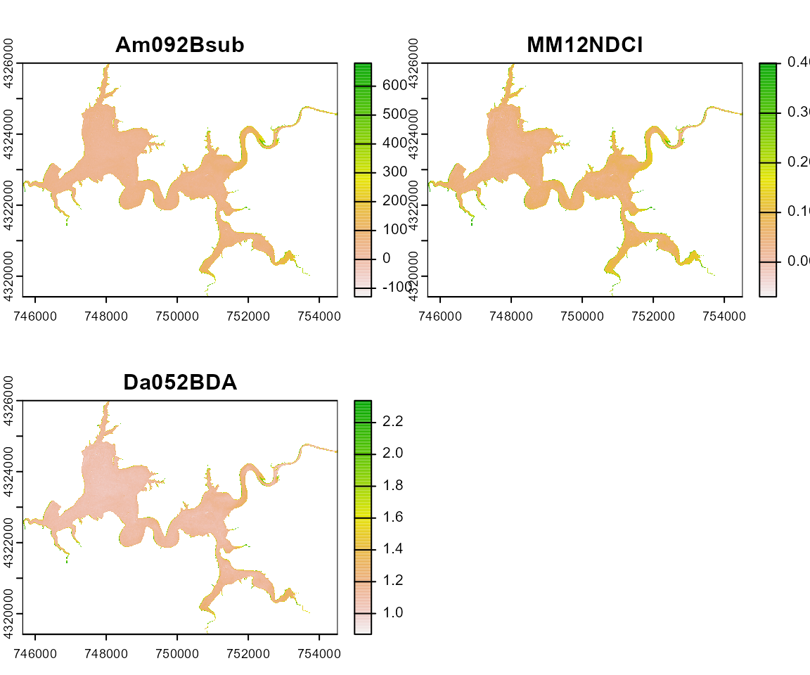
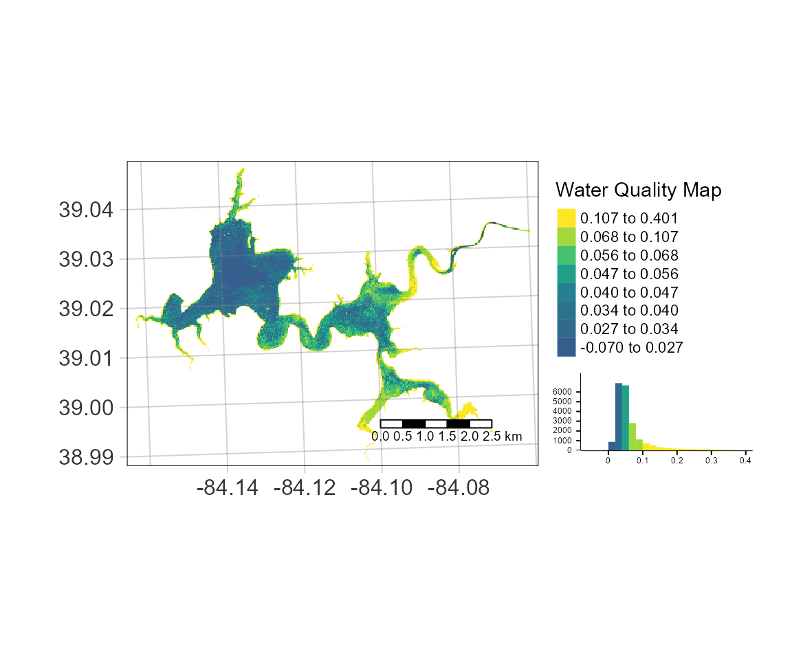

Introduction to the waterquality package
Richard Johansen, Jakub Nowosad, Molly Reif, and Erich Emery
2023-07-17
Source:../vignettes/waterquality_vignette.Rmd
waterquality_vignette.RmdThe main purpose of waterquality is to quickly and
easily convert satellite-based reflectance imagery into one or many
well-known water quality indices designed for the detection of harmful
algal blooms (HABs) using the following pigment proxies: chlorophyll-a,
blue-green algae (phycocyanin), and turbidity. Currently, this package
is able to process 40
algorithms for the following satellite-based imagers: WorldView-2
and -3, Sentinel-2, Landsat-8, MODIS, MERIS, and OLCI. In order to
improve the aesthetics of the wq_calc output, a series of
intuitive Map_WQ functions were developed to help reduce
technical barriers due to coding and the myriad of map options.
Additional functionality of the package includes a series of
extract_lm functions which wrap the “Fitting
Linear Models” and the “caret” packages to
quickly generate a suite of regression models with standardized outputs.
These functions range from simple linear models for a single dependent
and independent variable to robust linear regression using
crossvalidation over multiple dependent and independent variables. These
functions are extremely useful when conducting experimental testing on a
large number of satellite algorithms across multiple water quality
parameters. NOTE these functions require ground-truth
data in order to develop the models.
For an example of our entire research workflow, which includes data acquisition, image pre-processing, analyses, and results please see our publication entitled “Waterquality: An Open-Source R Package for the Detection and Quantification of Cyanobacterial Harmful Algal Blooms and Water Quality”.
Algorithms
Currently, the package includes a total of 40
algorithms that can be applied for the detection of the three
parameters. NOTE not all sensors are capable of using
all algorithms due to their spectral configurations. Each of the
algorithms are searchable within the package, where there is a reference
to the original paper (Ex. ?Am092Bsub()). Each algorithm is
also linked to the original papers water quality parameters
(chlorophyll-a, phycocyanin, turbidity) by type, which allows users to
select all algorithms for that type. The final outputs are raster
stacked images which represent relative index values and are not direct
estimations of chlorophyll-a, phycocyanin, or turbidity values. However,
relative index values can be converted to estimated concentration values
using the extract_lm functions and ground truth
measurements.
Water Quality Functions
wq_calc()
The main function of this package is called wq_calc()
which calculates water quality indices by using a reflectance raster
stack as an input, user-defined algorithm(s) selection, and satellite
configuration selection corresponding to the following three arguments:
terraRast, alg, and sat.
-
terraRast- The input reflectance image to be used in band algorithm calculation. -
alg- Determines the indices to be utilized:- Single Algorithm
- Multiple Algorithm
- Type of Algorithm
- All Possible Algorithms
-
sat- Determines the appropriate spectral configuration and subsequently appropriate algorithms to be calculated from predefined list:- WorldView-2
- Sentinel-2
- Landsat-8
- MODIS
- MERIS
- OLCI
Single Algorithm
library(waterquality)
library(terra)
Harsha <- terra::rast(system.file("raster/S2_Harsha.tif", package = "waterquality"))
Harsha_Am092Bsub <- wq_calc(terraRast = Harsha,
alg = "MM12NDCI",
sat = "sentinel2")
terra::plot(Harsha_Am092Bsub)
Multiple Algorithms
Harsha_Multiple <- wq_calc(terraRast = Harsha,
alg = c("MM12NDCI", "Am092Bsub", "Da052BDA"),
sat = "sentinel2")
terra::plot(Harsha_Multiple) 

Mapping Functions
Map_WQ_raster
This function wraps the “tmap” package to
help users to efficiently generate a map of a raster image which can be
overlaid with optional geospatial objects and data histogram. In order
to simplify this process and reduce the technical expertise required,
the number of arguments were reduced to the following: -
WQ_raster - Raster file generated from wq_calc
or other GeoTiff file
- sample_points - geospatial file (.shp or .gpkg)
containing sampling locations - map_title - text used to
generate title of map - raster_style - method to process
the color scale when col is a numeric variable. Please refer to the
style argument in the ?tmap::tm_raster() function for more
details (Default is “quantile”). - histogram - Option to
add or remove a histogram of the data values. (Default is TRUE)
Raster with points
library(waterquality)
library(terra)
library(tmap)
library(sf)
s2 = terra::rast(system.file("raster/S2_Harsha.tif", package = "waterquality"))
MM12NDCI = wq_calc(s2, alg = "MM12NDCI", sat = "sentinel2")
samples = terra::vect(system.file("raster/Harsha_Simple_Points_CRS.gpkg", package = "waterquality"))
lake_extent = terra::vect(system.file("raster/Harsha_Lake_CRS.gpkg", package = "waterquality"))
Map_WQ_raster(WQ_raster = MM12NDCI,
sample_points = samples,
map_title= "Water Quality Map",
raster_style = "quantile",
histogram = TRUE)
Map_WQ_basemap
This function wraps the “tmap” & “tmaptools”
packages in order to generate a map using user-defined vectors (points
and a polygon) overlaid on a Bing basemap. In order to simplify this
process and reduce the technical expertise required, the number of
arguments were reduced to the following: - WQ_extent -
geospatial file (.shp or .gpkg) used to extract aerial imagery from Bing
basemaps
- WQ_parameter - text referring to column heading of data
being mapped (i.e. Chl-a, PC, etc.) - sample_points -
geospatial file (.shp or .gpkg) containing sampling locations -
map_title - text used to generate title of map -
raster_style - method to process the color scale when col
is a numeric variable. Please refer to the style argument in the
?tmap::tm_raster() function for more details (Default is
“quantile”). - histogram - Option to add or remove a
histogram of the data values. (Default = TRUE)
Basemap with points
Map_WQ_basemap(WQ_extent = lake_extent,
sample_points = samples,
WQ_parameter = "Chl_ugL",
map_title= "Water Quality Map",
points_style = "quantile",
histogram = TRUE)Modeling Functions
Developing models is an essential step in water quality monitoring,
and this requires sufficient coincident ground truth data. These
functions have been developed to combine user-provided ground truth data
and the results from the wq_calc function to generate a
single or series of regression models. These functions have been
developed to easily conduct linear models with standardized outputs,
providing intuitive yet robust options. Most effectively, the functions
will utilize a single comma delimited (.csv) file as the data frame
source. Although these functions were designed for our water quality
research, they can be used as standalone functions for any data to
generate the same standardized outputs containing the following:
Global Model
- r2
- p-value
- slope
- intercept
Crossvalidated Model
- average r2
- average RMSE
- average MAE
Additionally, we have provided code that might be useful to help
users import and extract the data from a raster stack image (i.e. output
from wq_calc), combine it with a geospatial object (i.e
shapefiles of sample locations), and export the results to a .csv file
to be used in the modeling functions.
#Input raster image
wq_raster <- terra::rast("C:/temp/my_raster.tif")
#Input shapefile
wq_samples <- terra::vect('C:/temp/my_samples.shp')
#Extract values from raster and combine with shapefile
waterquality_data <- data.frame(wq_samples, terra::extract(wq_raster, wq_samples))
#Export results as csv file
write.csv(waterquality_data, file = "C:/temp/waterquality_data.csv")extract_lm
-
parameterA string specifying water quality parameter -
algorithmA string specifying water quality algorithm -
dfdata frame containing the values for parameter and algorithm arguments
Example
library(waterquality)
library(caret)
df <- read.csv(system.file("raster/waterquality_data.csv", package = "waterquality"))
extract_lm(parameter = "Chl_ugL", algorithm = "MM12NDCI", df = df)
#> # A tibble: 1 × 4
#> R_Squared Slope Intercept P_Value
#> <dbl> <dbl> <dbl> <dbl>
#> 1 0.162 26.2 4.69 0.153extract_lm_cv
-
parameterA string specifying water quality parameter -
algorithmA string specifying water quality algorithm -
dfdata frame containing the values for parameter and algorithm arguments -
train_methodA string specifying which classification or regression model to use (Default = “lm”). See ?caret::train for more details -
control_methodA string specifying the resampling method (Default = “repeatedcv”). See ?caret::trainControl for more details -
foldsthe number of folds to be used in the cross validation model (Default = 3) -
nrepeatsthe number of iterations to be used in the cross validation model (Default = 5)
Example
extract_lm_cv(parameter = "Chl_ugL", algorithm = "MM12NDCI",
df = df, train_method = "lm", control_method = "repeatedcv",
folds = 3, nrepeats = 5)
#> # A tibble: 1 × 7
#> R_Squared Slope Intercept P_Value CV_R_Squared RMSE MAE
#> <dbl> <dbl> <dbl> <dbl> <dbl> <dbl> <dbl>
#> 1 0.162 26.2 4.69 0.153 0.358 1.99 1.38extract_lm_cv_multi
-
parameterslist of water quality parameters -
algorithmslist of water quality algorithms -
dfdata frame containing the values for parameter and algorithm arguments -
train_methodA string specifying which classification or regression model to use (Default = “lm”). See ?caret::train for more details -
control_methodA string specifying the resampling method (Default = “repeatedcv”). See ?caret::trainControl for more details -
foldsthe number of folds to be used in the cross validation model (Default = 3) -
nrepeatsthe number of iterations to be used in the cross validation model (Default = 5)
Example
# Create series of strings to be used for parameters and algorithms arguments
algorithms <- c(names(df[6:10]))
parameters <- c(names(df[3:5]))
extract_lm_cv_multi_results <- extract_lm_cv_multi(parameters = parameters, algorithms = algorithms,
df = df, train_method = "lm", control_method = "repeatedcv",
folds = 3, nrepeats = 5)
head(extract_lm_cv_multi_results)
#> # A tibble: 6 × 8
#> Algorithms R_Squared Slope Intercept P_Value CV_R_Squared RMSE MAE
#> <chr> <dbl> <dbl> <dbl> <dbl> <dbl> <dbl> <dbl>
#> 1 Turbid_NTU_Al10… 0.441 -30.5 -4.37 9.54e-3 0.511 2.78 1.79
#> 2 Turbid_NTU_Go04… 0.763 0.0430 0.311 4.46e-5 0.435 2.23 1.46
#> 3 Turbid_NTU_Ku15… 0.432 0.0818 -0.0687 1.06e-2 0.371 2.86 1.91
#> 4 Turbid_NTU_MM12… 0.166 42.3 0.370 1.48e-1 0.428 2.64 1.71
#> 5 Turbid_NTU_Wy08… 0.432 0.0818 -0.0687 1.06e-2 0.573 3.01 1.96
#> 6 Chl_ugL_Al10SABI 0.534 -21.0 1.30 2.99e-3 0.685 1.41 1.13extract_lm_cv_all
-
parameterslist of water quality parameters -
dfdata frame containing the values for parameter and algorithm arguments -
train_methodA string specifying which classification or regression model to use (Default = “lm”). See ?caret::train for more details -
control_methodA string specifying the resampling method (Default = “repeatedcv”). See ?caret::trainControl for more details -
foldsthe number of folds to be used in the cross validation model (Default = 3) -
nrepeatsthe number of iterations to be used in the cross validation model (Default = 5)
Example
extract_lm_cv_all_results <- extract_lm_cv_all(parameters = parameters, df = df,
train_method = "lm", control_method = "repeatedcv",
folds = 3, nrepeats = 5)
head(extract_lm_cv_all_results)
#> # A tibble: 6 × 8
#> Algorithms R_Squared Slope Intercept P_Value CV_R_Squared RMSE MAE
#> <chr> <dbl> <dbl> <dbl> <dbl> <dbl> <dbl> <dbl>
#> 1 Turbid_NTU_pH 0.976 -14.1 125. 4.86e-11 0.620 1.47 0.820
#> 2 Turbid_NTU_Al10S… 0.441 -30.5 -4.37 9.54e- 3 0.549 2.42 1.46
#> 3 Turbid_NTU_MM12N… 0.166 42.3 0.370 1.48e- 1 0.411 2.81 1.82
#> 4 Turbid_NTU_Da052… 0.168 19.2 -18.7 1.45e- 1 0.260 2.61 1.65
#> 5 Turbid_NTU_MM12N… 0.166 42.3 0.370 1.48e- 1 0.432 2.96 2.00
#> 6 Turbid_NTU_TurbD… 0.136 -7.44 5.47 1.95e- 1 0.380 2.82 1.93Acknowledgements
The waterquality package was developed with funding from the U.S. Army Corps of Engineers. The authors would also like to thank the University of Cincinnati Library’s Research & Data Services and the University of Cincinnati’s Space Informatics Lab for their expertise and technical services.
Credit
To cite this library, please use the following entry:
Johansen R., Reif M., Emery E., Nowosad J., Beck R., Xu M., Liu H., waterquality: An Open-Source R Package for the Detection and Quantification of Cyanobacterial Harmful Algal Blooms and Water Quality. USACE ERDC/EL TR-19-20; DOI: 10.21079/11681/35053
@Article{, author = {Richard Johansen and Molly Reif and Erich Emery and Jakub Nowosad and Richard Beck and Min Xu and Hongxing Liu}, title = {waterquality: An Open-Source R Package for the Detection and Quantification of Cyanobacterial Harmful Algal Blooms and Water Quality}, year = {2019}, doi = {10.21079/11681/35053}, journal = {USACE ERDC/EL TR-19-20}, }